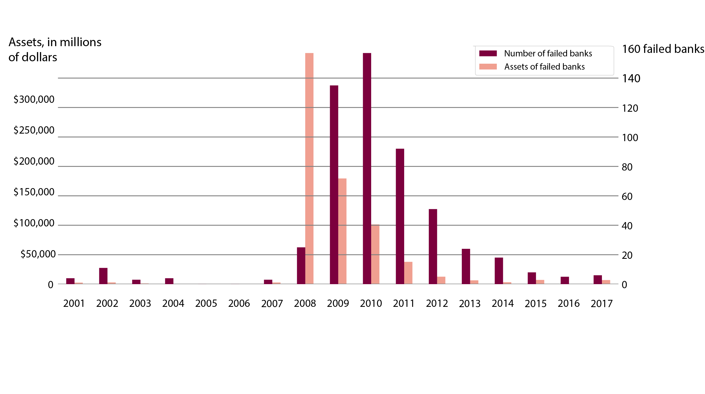
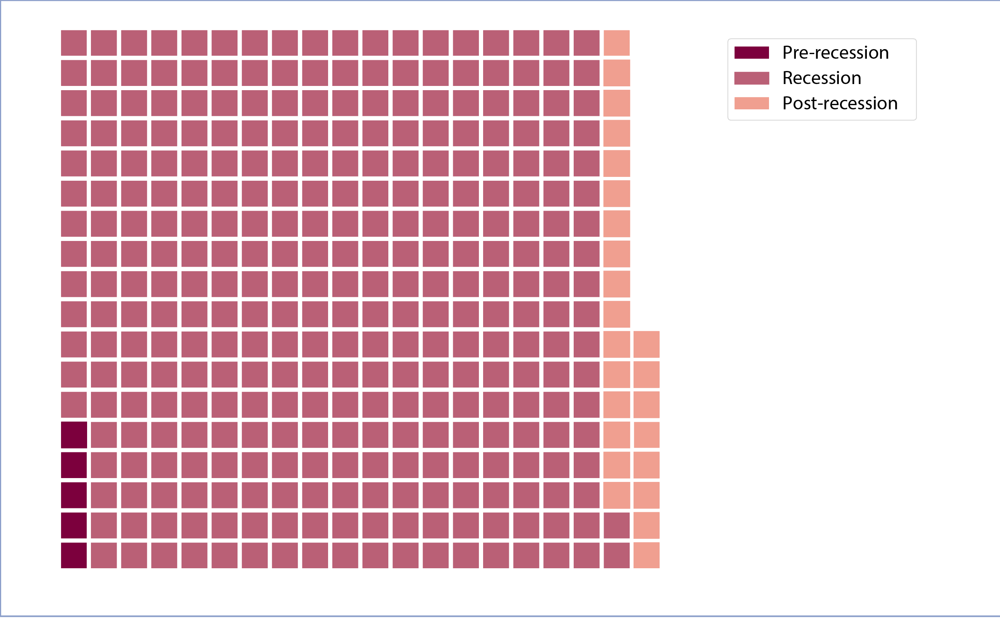

BY Veronica Penney
Published August 3, 2018
Bank failures peaked during the Great Recession, yet despite the humming U.S. economy, the number of financial institutions failing per year has still not returned to pre-Recession levels. The total value of the assets held by these institutions also remains higher than prior to 2018.
This trend is particularly interesting given that, according to The Wall Street Journal, big banks are finding a new way to finance subprime loans--this time, through nonbank financial firms.
If banks have the same financial practices, then, why are so many banks still failing?
Bank failures and assets
Beginning in 2008, a small number of banks worth a lot of money failed, which produced ripple effects in subsequent years.

Source: FDIC
2013 and beyond
For the purposes of this piece, the Great Recession and its aftermath are defined as 2008 through 2012, since those were the years that were most tumultuous for the banking industry.
Value of failed banks before, during and after the Recession
Each square represents one billion dollars.
 SOURCE: FDIC
The darkest squares represent bank failures from 2001 through 2008. No banks failed in 2005 or 2006, which helps paint a picture of just how few banks were failing in that time span.
As could be expected, failed banks during the Great Recession comprise the lion's share of all bank failures since 2001. However, the period spanning 2013 through Q2 2018 experienced four times as many failures as the pre-Recession years.
NOTE: Each mark represents one failed bank.
SOURCE: FDIC
With the exception of Illinois, the banks failing in these states are relatively small. Generally speaking, more banks fail annually in Georgia than in any other state. In part, this phenomenon can be explained by a legacy of strict bank regulations in Georgia, where banks were not permitted to operate across county lines until 1996.